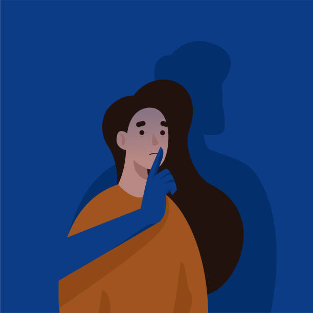
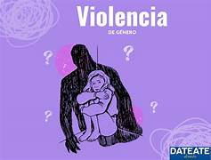

Violencia de genero
Este fenomeno se lo considera como una de las mayores acciones que causan dificultades en el trayecto de la vida de las personas.
Estos ciertos conflictos que se encuentran en las personas por dia se desarrollan en diferentes ambitos de la vida.... La Educación Sexual Integral (ESI) busca promover el respeto, la igualdad y el cuidado de los derechos de todas las personas. Uno de los temas centrales es la prevención de las violencias de género, entendidas como aquellas situaciones basadas en relaciones desiguales de poder que afectan la dignidad, la libertad y la integridad de las personas. La masculinidad dominante y el machismo suelen reproducir conductas de violencia, discriminación y desigualdad hacia mujeres y diversidades. Estas prácticas pueden manifestarse en distintos ámbitos como la familia, la escuela, el trabajo, los medios de comunicación y los espacios públicos.
En el ámbito laboral, la violencia de género incluye discriminación, acoso, hostigamiento y desigualdad salarial. Además, la Ley Nº 27.580 incorporó el Convenio 190 de la OIT, que promueve ambientes de trabajo libres de violencia y acoso.
La violencia sexual comprende cualquier acción sexual realizada sin consentimiento. El consentimiento debe ser libre, claro, voluntario y reversible. La ESI promueve el respeto por los límites personales y la construcción de vínculos sanos y responsables. También se aborda la importancia de la salud sexual y reproductiva, entendida como un estado de bienestar físico, mental y social relacionado con la sexualidad. Todas las personas tienen derecho a decidir sobre su cuerpo y acceder a información, métodos anticonceptivos y atención de salud sin discriminación.
Otro tema importante es la trata de personas, considerada una grave violación a los derechos humanos. Consiste en la captación y explotación de personas con fines laborales o sexuales mediante engaños, amenazas o violencia. La prevención, la información y la denuncia son fundamentales para combatir este delito.
La ESI busca construir una sociedad más igualitaria, libre de discriminación y violencia, promoviendo el respeto, el cuidado y los derechos humanos.

.jpg)
